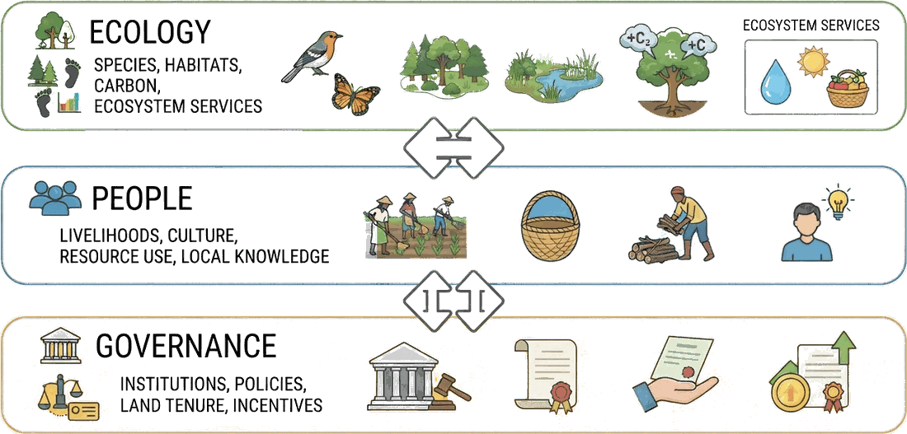

ArdhiLytics: Geospatial Intelligence
We transform complex spatial and environmental data into practical insights that support planning, conservation, development, and resource management.
Who we are
ArdhiLytics is a science-driven spatial analytics and environmental intelligence firm.
We help governments, conservation organizations, investors, and communities turn complex landscape data into actionable insights for planning, monitoring, and decision-making. By combining satellite observations, spatial analysis, field data, and local knowledge, we deliver credible, evidence-based solutions at the intersection of conservation, climate, and sustainable development.
From mapping and landscape assessment to monitoring, verification, and impact evaluation, we help partners make confident decisions grounded in data.
What we do
From reliable data and practical training to mapping, modeling and planning, each layer stands alone, or stacks into a full landscape assessment
Our Core Logic
Environmental challenges are shaped by ecology, people, and governance. Effective solutions require understanding all three. By combining spatial analysis with local knowledge and institutional context, we help clients design solutions that are environmentally sound, socially practical, and built to last.

We map the intersection where these three dimensions meet:
We quantify species presence, habitat quality, carbon storage, and critical ecosystem services.
We account for livelihoods, cultural values, resource dependency, and the wealth of local knowledge that shapes landscape use.
We analyze the institutions, policies, land tenure systems, and economic incentives that dictate how land is managed and protected.
Community impact
At ArdhiLytics, we believe that scientific knowledge creates the greatest impact when it is shared, accessible, and actionable. As part of our commitment to environmental stewardship and community service, we actively support conservation practitioners, local institutions, and the broader public through training, open environmental data, and rapid-response decision support tools.
Capacity building
We provide practical training, workshops, and mentorship in GIS, remote sensing, environmental monitoring, spatial modeling, and social-ecological assessment — strengthening local expertise so practitioners can make evidence-based conservation and land management decisions.
Open data
Access to reliable environmental information is essential for informed decision-making. We work to make environmental data, maps, indicators, and analytical tools publicly accessible, helping researchers, communities, NGOs, and policymakers understand and manage their landscapes.
Rapid response
When environmental emergencies occur, timely information can save lives, livelihoods, and ecosystems. We develop and deploy rapid-response mapping and monitoring tools supporting preparedness, impact assessment, and recovery for floods, droughts, wildfires, and land degradation.
Tell us what you’re trying to prove, protect, or plan for. Let us discuss which layers apply.
Social-Ecological Systems & Resilience Assessment
Where land, climate, and community governance converge.
Learn more